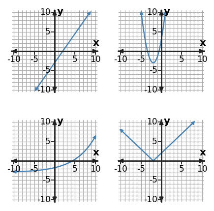
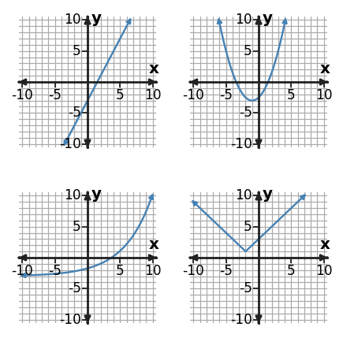
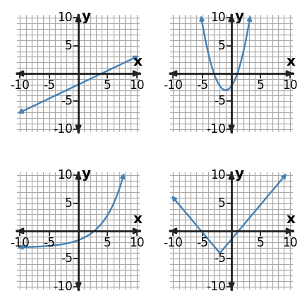

Algebra Practice 4.1
1. The four graphs below show familiar function families. Identify the family in the top-left, top-right, bottom-left, and bottom-right positions, in that order.

2. An equation has the form $y=3|x-2|-1$ while a low-resolution graph looks like two nearly straight pieces. Identify the family and name the decisive evidence.
3. Classify the function family represented by $y=2|x+1|$. Give one feature of the equation that supports your classification.
4. Classify the function family represented by the table using the strongest numerical pattern in the values as evidence.
| x | y |
|---|---|
| 0 | -1 |
| 1 | -4 |
| 2 | -7 |
| 3 | -10 |
5. Which graph in the gallery has a sharp corner at its minimum? Name its position and family.

6. Classify the function family represented by the table using the strongest numerical pattern in the values as evidence.
| x | y |
|---|---|
| 0 | 2 |
| 1 | 4 |
| 2 | 8 |
| 3 | 16 |
7. Match each position to the feature: constant slope, smooth turning point, accelerating growth, sharp corner.

8. Use the table features to sort this relationship into a function family. Name the family and the feature you used.
| x | y |
|---|---|
| -1 | 6 |
| 0 | 3 |
| 1 | 2 |
| 2 | 3 |
| 3 | 6 |
9. Sort the top-right and bottom-right graphs by family. What feature separates the two symmetric graphs?

10. An equation is $y=2(x+1)^2-2$, while a rough sketch looks almost V-shaped near its minimum. Use the family features in the representations. Which evidence is decisive for the family?
11. Classify the function family represented by $y=|x-1|-1$. Give one feature of the equation that supports your classification.
12. Use the table features to sort this relationship into a function family. Name the family and the feature you used.
| x | y |
|---|---|
| 0 | 4 |
| 1 | 8 |
| 2 | 16 |
| 3 | 32 |
13. Classify the function family represented by the table using the strongest numerical pattern in the values as evidence.
| x | y |
|---|---|
| 0 | 1 |
| 1 | 2 |
| 2 | 5 |
| 3 | 10 |
14. The top-left and bottom-left graphs both increase. Which full-graph feature is stronger evidence than a tiny local window for distinguishing linear from exponential?

15. Classify the function family represented by $y=2|x-2|$. Give one feature of the equation that supports your classification.
16. Which numerical pattern in the table is the strongest evidence for the function family? Use it to classify the relationship.
| x | y |
|---|---|
| -2 | 4 |
| -1 | 2 |
| 0 | 0 |
| 1 | 2 |
| 2 | 4 |
17. If a small graph window made the bottom-left curve look almost linear, what additional representation would most decisively distinguish linear from exponential?

18. A table has constant first differences of -3, but a cropped graph looks slightly curved. Which representation gives the strongest evidence, and which evidence should control the classification?
19. Solve the system $ 3x+y=8$ and $6x-y=1$. State the solution as an ordered pair.
20. Solve the system $ x+2y=8$ and $2x-2y=-2$. State the solution as an ordered pair.
21. Solve the system $ 2x+3y=10$ and $4x-3y=-16$. State the solution as an ordered pair.
22. Relationship A is $y=0.5x-2$. Relationship B is shown in the table. Which relationship has the greater slope, and which has the greater starting value?
| x | Relationship B |
|---|---|
| 0 | 3 |
| 2 | 2 |
| 4 | 1 |
23. Relationship A is $y=3x$. Relationship B is shown in the table. Which relationship changes faster, and which has the greater starting value?
| x | Relationship B |
|---|---|
| 0 | 2 |
| 2 | 3 |
| 4 | 4 |
24. Relationship A is $y=2x+1$. Relationship B is shown in the table. Which relationship changes faster, and which has the greater starting value?
| x | Relationship B |
|---|---|
| 0 | 5 |
| 2 | 7 |
| 4 | 9 |